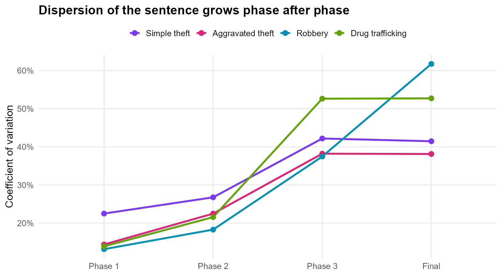
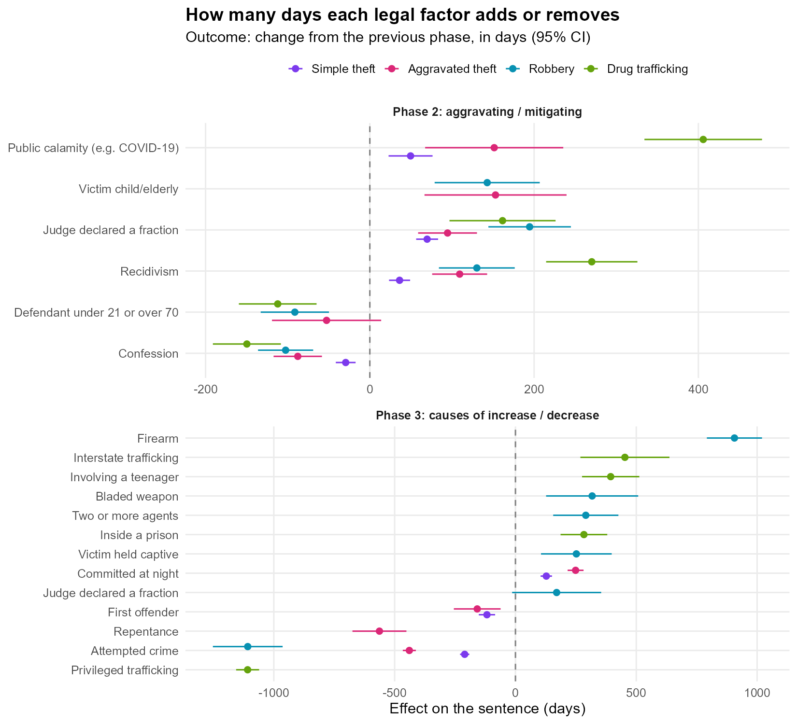

flowchart LR A["Phase 1<br/>Base sentence<br/><small>art. 59: culpability, record,<br/>circumstances, consequences</small>"] --> B["Phase 2<br/>Provisional sentence<br/><small>aggravating and<br/>mitigating factors</small>"] B --> C["Phase 3<br/>Definitive sentence<br/><small>causes of increase<br/>and decrease</small>"] C --> D["Final sentence<br/><small>multiple crimes,<br/>continued crime</small>"]
Judicial Sentencing in Numbers: the statistical methodology of a PhD thesis
Note
Language: R (data.table, MASS, car, lmtest, caret, cluster) · Type: statistical consulting for a PhD in Law · Data: public on OSF (gender study, confession study) · Outputs: 1 thesis and 3 peer-reviewed articles
About the project
How do Brazilian judges actually calculate a criminal sentence? The Brazilian Penal Code defines a three-phase method (dosimetria trifásica), but leaves a lot of room for discretion: the law says which factors increase or decrease the sentence, and often not by how much.
Gabriel Silveira de Queirós Campos, a PhD candidate in Law, wanted to measure this discretion empirically in the São Paulo State Court (TJ-SP). I was responsible for the whole statistical methodology: turning court decisions into data, the sampling plan, the analysis strategy and the answers to the examining committee. The methodology received the maximum grade from the committee, and the same database produced three articles in which I am a co-author.
This page focuses on what I consider the most important part of the work: the planning decisions, and why each one was taken.
1. From a legal method to a dataset
The first problem was not statistical: a sentence is a long legal text, and there was no dataset. The solution was to design a coding instrument that mirrors the three phases of the legal method, so that each decision is transcribed exactly in the order in which the judge reasons.
The pipeline of the research:
flowchart LR S["Convictions of 2022<br/>counted by crime"] --> N["Sample size<br/>finite population"] --> F["Random selection and<br/>manual coding by phase"] --> L["Cleaning,<br/>16 bases"] --> M["Tests, models<br/>and robustness"]
Each legal factor became a binary variable (present or not in the decision), the fraction declared by the judge was recorded as text, and the sentence of each phase was converted to days, so that the four crimes could be analysed on the same scale. One base was built for each crime × phase, sixteen in total.
2. Sampling plan
Four crimes were studied: simple theft, aggravated theft, robbery and drug trafficking. For each one, the number of convictions in 2022 was counted and the minimum sample was calculated with the formula for a finite population, with 95% confidence, a 5% margin of error and maximum variance (\(p = 0.5\)):
\[n = \frac{N \, z^2 \, p(1-p)}{e^2 (N-1) + z^2 \, p(1-p)}\]
| Crime | Convictions (N) | Minimum sample | Collected | Final sample |
|---|---|---|---|---|
| Simple theft | 487 | 216 | 266 | 216 |
| Aggravated theft | 695 | 248 | 288 | 248 |
| Robbery | 1,695 | 314 | 330 | 314 |
| Drug trafficking | 26,919 | 379 | 377 | 373 |
| Total | 1,157 | 1,261 | 1,151 |
Two details of this plan are worth mentioning:
- The coders collected a margin above the minimum. This protects the sample against the losses that always appear in manual coding: duplicated decisions, decisions that are not convictions, inconsistencies between phases. All 1,261 decisions were used in the gender article.
- After cleaning, the thesis used exactly the minimum size. Duplicated cases were removed and the sample was reduced to the calculated \(n\) with a random subsample with a fixed seed, so that the final sample remains a simple random sample and anyone can reproduce it. In drug trafficking, the collection stayed slightly below the minimum (377 against 379) and four more decisions were lost to inconsistencies in the case number. With the final 373 decisions the margin of error is 5.04% instead of 5%, a difference that is documented in the thesis.
3. The analysis strategy: one model per phase
The most important methodological decision was the definition of the response variable. Modelling the final sentence directly would mix the effects of all phases: a confession (phase 2) and a firearm (phase 3) would compete in the same equation, while legally they act at different moments, over different bases.
So each phase got its own model, and in phases 2 and 3 the outcome is the change in the sentence in relation to the previous phase:
\[\Delta_{\text{phase } k} = \text{sentence}_{k} - \text{sentence}_{k-1}\]
In practice, in R:
furtos2 <- merge(furtos2, furtos1, by = "processo")
furtos2[, dif_pena := penaemdias - penaemdias_1]
fit <- lm(formula = dif_pena ~ reincidencia + incendio + confissao + usou_frac,
data = furtos2)With this, each coefficient has a direct legal reading: how many days this factor adds or removes in this phase, given everything that happened before. This produced 12 models (4 crimes × 3 phases), with variables chosen by stepwise AIC among the legally possible ones, 95% confidence intervals and VIF for multicollinearity. The adjusted R² goes from 0.38 to 0.86.
4. Decisions guided by evidence
A good methodology is also made of the paths that were not taken, and of the reasons for that.
- Non-parametric tests. The sentences are far from normal (Kolmogorov-Smirnov, Lilliefors, Anderson-Darling and Shapiro-Wilk all rejected normality), so the comparisons between groups, for example sentences of male and female judges, were made with Wilcoxon / Mann-Whitney tests.
- Clustering was tested and rejected. To look for “profiles” of sentencing, five algorithms were tried: k-means, PAM with Gower distance, Ward’s hierarchical clustering, DBSCAN and k-prototypes. All of them separated the decisions only by the size of the sentence, which says nothing new. Instead of forcing a result, this was documented and replaced by a theory-driven grouping: the most frequent final sentences were traced back through the combination of factors in each phase.
- No automatic correction for multiple tests. The study is observational and exploratory, with many related tests. Corrections like Bonferroni would strongly increase the type II error, so the interpretation is based on effect sizes, confidence intervals and legal plausibility (Perneger, 1998; Gelman & Loken, 2014). This choice was argued in writing to the committee.
- Multilevel models by court district were left for future work. They are a relevant refinement, but the sample was designed to estimate proportions and effects by crime, not variance between districts.
5. Robustness, at the committee’s request
For the gender article, the examining committee asked for a deeper validation of the models. The audit included:
| Check | Purpose |
|---|---|
| VIF | Multicollinearity between legal factors |
| Breusch-Pagan | Homoscedasticity of the residuals |
| Shapiro-Wilk on standardised residuals + residual plots | Normality of the errors |
| 70/30 train / test split | Stability of the coefficients out of sample |
| 10-fold cross-validation | Predictive stability |
| Leave-one-variable-out sensitivity | How much each variable contributes to the adjusted R² |
6. What the data showed
The dispersion grows phase after phase
If all judges applied the method in the same way, cases with the same characteristics would receive similar sentences. The coefficient of variation of the sentence shows that discretion accumulates along the phases: in drug trafficking it goes from 14% in the base sentence to 53% after phase 3.

Phase 3 is the one that changes the sentence the most
| Crime | Phase 2: average change | Phase 2: cases changed | Phase 3: average change | Phase 3: cases changed |
|---|---|---|---|---|
| Simple theft | 38 days | 41% | 65 days | 34% |
| Aggravated theft | 84 days | 47% | 167 days | 44% |
| Robbery | 149 days | 47% | 834 days | 89% |
| Drug trafficking | 180 days | 42% | 487 days | 49% |
Judges strongly prefer some fractions
Where the law does not fix the fraction, 1/6 dominates: it is the most declared fraction in phases 1 and 2 for all crimes. In phase 3, where the law gives a range, judges stay at the bottom of it: 1/6 for the increases of the drug law (range 1/6 to 2/3) and 1/3 for robbery (range 1/3 to 1/2); for theft at night the law fixes 1/3. An important share of the decisions in phase 1 does not declare any fraction at all, which makes the reasoning harder to review.

How many days each factor is worth

Some results: a confession removes between 29 and 150 days in phase 2, depending on the crime; a firearm adds about 900 days to a robbery; an attempted crime or “privileged” trafficking remove more than 1,000 days. In drug trafficking, a crime committed during a public calamity, in practice the COVID-19 pandemic, added about 400 days.
Is a confession really worth it?
This question became one of the articles. Brazilian case law (Súmula 231 of the STJ) forbids a mitigating factor from taking the sentence below the legal minimum, so a defendant who confesses but already has a base sentence at the minimum gains nothing. Among the defendants who confessed and had no aggravating factor, the share whose sentence did not change in phase 2 was:
| Crime | Cases | Confession had no effect | Average reduction when it had |
|---|---|---|---|
| Simple theft | 32 | 66% | 82 days |
| Aggravated theft | 36 | 36% | 137 days |
| Robbery | 37 | 57% | 269 days |
| Drug trafficking | 59 | 59% | 318 days |
Publications
The three articles below were written from this same database and sample. I am a co-author of all of them, and they are listed on my ORCID profile.
- Campos, G. S. Q.; Bedê, A.; Bussinguer, E. C. A.; Silva, H. B. (2025). Uncovering judges’ gender effects in Brazilian sentencing: A counter-hegemonic role of women in the criminal justice system? International Journal of Law, Crime and Justice, 83. doi:10.1016/j.ijlcj.2025.100789
- Campos, G.; Bedê Jr., A.; Bussinguer, E. C. A.; Silva, H. B. (2026). Gênero e sentença criminal (Gender and sentencing). Revista de Estudos Empíricos em Direito, 13. doi:10.19092/reed.v13.995
- Campos, G.; Bedê Jr., A.; Silva, H. B. (2026). A confissão realmente vale a pena? (Is a guilty plea really worth it?). Revista de Estudos Empíricos em Direito, 13. doi:10.19092/reed.v13.1081
Reproducibility
The data and the R scripts are public on OSF (gender study, confession study). The figures and tables of this page were generated by this script, which runs the original model script unchanged and exports only aggregated results.